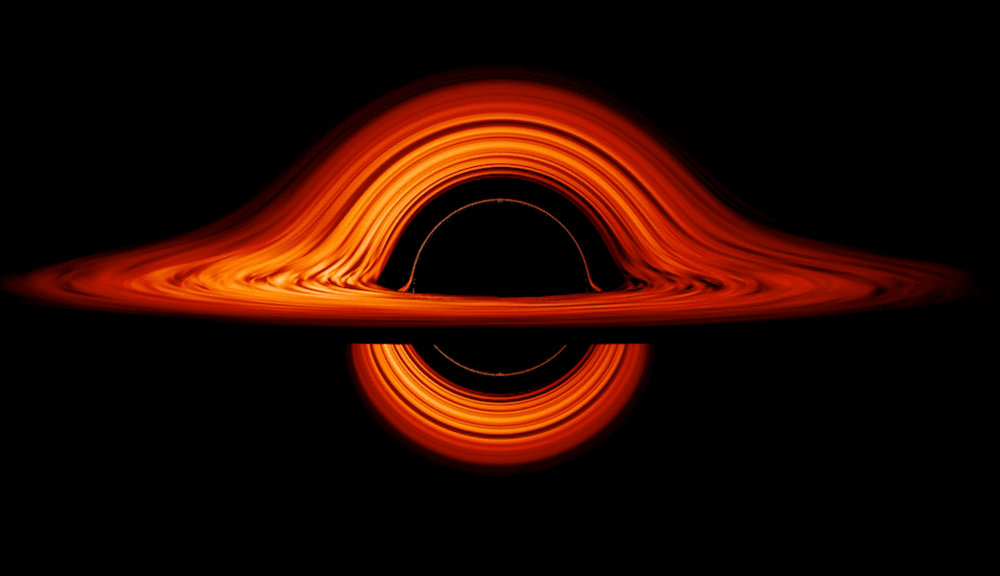
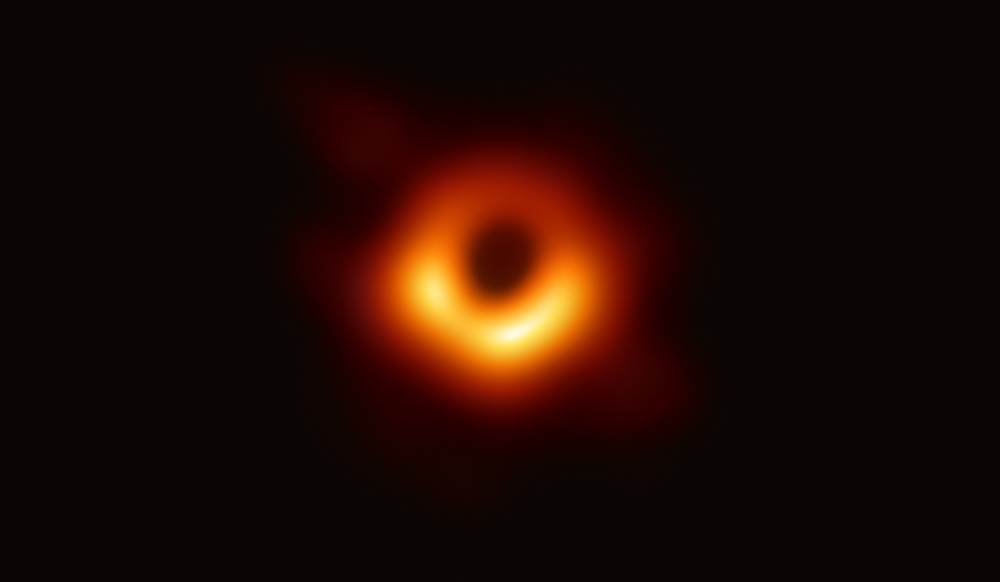

Oh! Gravity.Hans (Hanzhi) Zhang.
I am a Master's student in Theoretical Physics (Part III of the Mathematical Tripos) at the University of Cambridge, St John's College.
My research interests broadly lie in gravitational physics and general relativity, from rigorous mathematical questions to astronomical applications, and from classical gravity to its quantum corrections. Oh, and I have a particular soft spot for black holes.
Outside mathematics and physics, I fence (épée), write the occasional prose poem, and listen to a fair amount of music — nobody dislikes toe.

Light around a black hole
A simulated thin accretion disk around a non-rotating black hole. Gravitational lensing reveals the far side; relativistic beaming makes the approaching side brighter.

M87*, observed
The first EHT image, released in 2019 from 2017 observations at 1.3 mm. Radio emission surrounds a central brightness depression associated with the black hole's shadow.